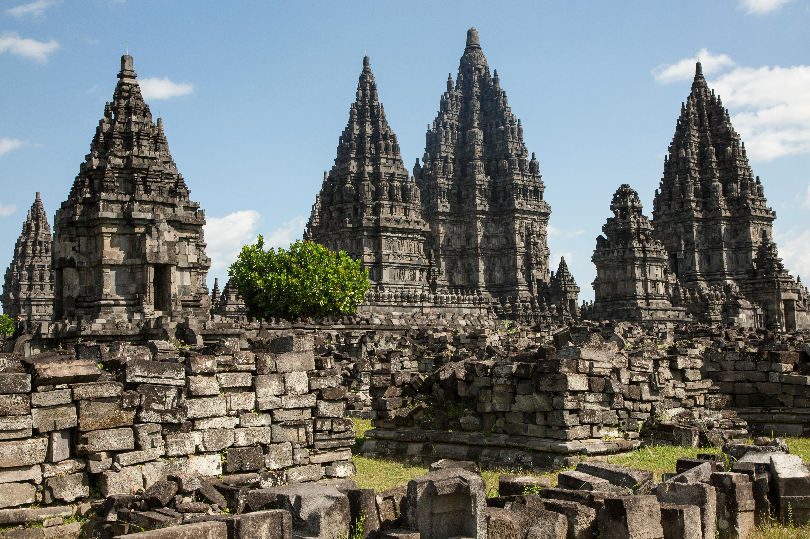

Pariwisata Di Perambanan

Candi Prambanan merupakan candi Hindu yang terbesar di Indonesia. Sampai saat ini belum dapat dipastikan kapan candi ini dibangun dan atas perintah siapa, namun kuat dugaan bahwa Candi Prambanan dibangun sekitar pertengahan abad ke-9 oleh raja dari Wangsa Sanjaya, yaitu Raja Balitung Maha Sambu. Dugaan tersebut didasarkan pada isi Prasasti Syiwagrha yang ditemukan di sekitar Prambanan dan saat ini tersimpan di Museum Nasional di Jakarta. Prasasti berangka tahun 778 Saka (856 M) ini ditulis pada masa pemerintahan Rakai Pikatan. Denah asli Candi Prambanan berbentuk persegi panjang, terdiri atas halaman luar dan tiga pelataran, yaitu Jaba (pelataran luar), Tengahan (pelataran tengah) dan Njeron (pelataran dalam). Halaman luar merupakan areal terbuka yang mengelilingi pelataran luar. Pelataran luar berbentuk bujur dengan luas 390 m2. Pelataran ini dahulu dikelilingi oleh pagar batu yang kini sudah tinggal reruntuhan. Pelataran luar saat ini hanya merupakan pelataran kosong. Belum diketahui apakah semula terdapat bangunan atau hiasan lain di pelataran ini.
Di tengah pelataran luar, terdapat pelataran kedua, yaitu pelataran tengah yang berbentuk persegi panjang seluas 222 m2. Pelataran tengah dahulu juga dikelilingi pagar batu yang saat ini juga sudah runtuh. Pelataran ini terdiri atas empat teras berundak, makin ke dalam makin tinggi. Di teras pertama, yaitu teras yang terbawah, terdapat 68 candi kecil yang berderet berkeliling, terbagi dalam empat baris oleh jalan penghubung antarpintu pelataran. Di teras kedua terdapat 60 candi, di teras ketiga terdapat 52 candi, dan di teras keempat, atau teras teratas, terdapat 44 candi. Seluruh candi di pelataran tengah ini mempunyai bentuk dan ukuran yang sama, yaitu luas denah dasar 6 m2 dan tinggi 14 m. Hampir semua candi di pelataran tengah tersebut saat ini dalam keadaan hancur. Yang tersisa hanya reruntuhannya saja.
Pelataran dalam, merupakan pelataran yang paling tinggi letaknya dan yang dianggap sebagai tempat yang paling suci. Pelataran ini berdenah persegi empat seluas 110 m2, dengan tinggi sekitar 1,5 m dari permukaan teras teratas pelataran tengah. Pelataran ini dikelilingi oleh turap dan pagar batu. Di keempat sisinya terdapat gerbang berbentuk gapura paduraksa. Saat ini hanya gapura di sisi selatan yang masih utuh. Di depan masing-masing gerbang pelataran teratas terdapat sepasang candi kecil, berdenah dasar bujur sangkar seluas 1, 5 m2 dengan tinggi 4 m.
Di pelataran dalam terdapat 2 barisan candi yang membujur arah utara selatan. Di barisan barat terdapat 3 buah candi yang menghadap ke timur. Candi yang letaknya paling utara adalah Candi Wisnu, di tengah adalah Candi Syiwa, dan di selatan adalah Candi Brahma. Di barisan timur juga terdapat 3 buah candi yang menghadap ke barat. Ketiga candi ini disebut candi wahana (wahana = kendaraan), karena masing-masing candi diberi nama sesuai dengan binatang yang merupakan tunggangan dewa yang candinya terletak di hadapannya.
Candi yang berhadapan dengan Candi Wisnu adalah Candi Garuda, yang berhadapan dengan Candi Syiwa adalah Candi Nandi (lembu), dan yang berhadapan dengan Candi Brahma adalah Candi Angsa. Dengan demikian, keenam candi ini saling berhadapan membentuk lorong. Candi Wisnu, Brahma, Angsa, Garuda dan Nandi mempunyai bentuk dan ukuran yang sama, yaitu berdenah dasar bujur sangkar seluas 15 m2 dengan tinggi 25 m. Di ujung utara dan selatan lorong masing-masing terdapat sebuah candi kecil yang saling berhadapan, yang disebut Candi Apit.